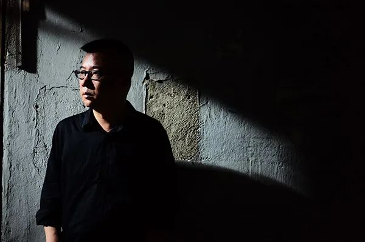

疫情中的武汉诗人③：先把所有的问题、抱怨和不解都放在一边
原文链接 备份链接 澎湃新闻记者 范佳来 2020-02-05 11:47 来源：澎湃新闻 字号 “慌乱。” 这是武汉诗人张执浩经常提到的一个词。“看到外界的信息蜂拥而至，生命的无力感特别强烈。” 1月23日10时起,武汉城市公交、地铁、 …
澎湃新闻记者 朱远祥
对上千万的武汉人来说，新冠肺炎疫情是一次前所未有的考验。自2020年1月23日武汉“封城”以来，他们在“围城”里坚强地生存、抗争，湖北省作协主席、作家李修文也是亲历者中的一员。
随着武汉疫情的逐渐好转，在下沉社区的过程中，李修文有一些身临其境的感受、观察和思考。对于武汉这座城，他觉得“真实的生活正在到来的路上，我们必会再次真正拥有它”。
3月1日，李修文接受澎湃新闻（www.thepaper.cn)采访时介绍，疫情发生后，越来越多的写作者深入湖北抗疫一线，进行采访和创作。他认为，在灾难文学的创作中，作家应该更致力于提高写作的品质，“唯有这样，才能使之与死难者、战斗者的尊严相匹配”。

湖北省作协主席李修文。受访者 供图
对话：
“真实的生活正在到来的路上”
澎湃新闻：从封城至今，您的个人生活和内心发生了什么变化？到今天为止，您出门了吗？
李修文：我和所有在家隔离的武汉人都没有区别，这些天来百感交集，各种复杂的情绪都感受到了。作为一个写作者，我不仅关注自己的内心，也尽力体会别人的内心。朋友们邻居们，那些认识和不认识的人，一个病人和一个非病人，他们的内心是不一样的，更不要说已经死去的人。我想，这也恰恰是作家这个职业的职责所在——感同身受、深思、理解，然后记住。
因为要去社区下沉，所以我已经出门了。目前，情况的确得到了根本性的好转。这几天，因为我们协会有作家要正式介入到这场战役的采访中去，所以我还需要为了一些相关事务再出门。
澎湃新闻：您下沉社区时看见人们的生活状态如何？经历这场疫情，您觉得武汉人的精神和心理有哪些变化？
李修文：目前，我觉得我们已经从一种茫乱中镇定了下来，我所认识的大多数人都在积极地盘算和谋划着如何度过接下来的隔离期。我想我们和全国各地被隔离的人其实是一样的：期待着春暖花开，期待着正常的生活。
但是，仍有为数不少的人陷落在他们的特殊困境中，必须看见他们、找到他们、帮助他们。比如那些家里有人去世的人，外地滞留于此却无家可归的人，本身就身患重病的人、长期停药的人，除了政府要尽责，其实很多人也强烈意识到，我们对他人也负有责任。
另外，以我自己所见，包括社区工作人员在内的抗疫一线人员，真的很辛苦。这么大的城市，这么高的管理难度，许多工作的落实，千头万绪地把担子压在了他们身上。都是人之父母，都是人之子女，这个时候，我们惟有继续撑住，继续管好自己，做好隔离和防护，才是真正的将心比心。
我就跟你说件小事吧。前几天下沉的时候，我看见两个老太太站在自己的阳台上，戴着口罩隔空吵架，先是争执萝卜怎么做才好吃，后来发展到互相挖苦对方的厨艺，标准的武汉嫂子语气，大嗓门，说着说着又哈哈大笑。
当时我站在楼底下，听得鼻子发酸。是啊，这就是最真实的生活，而真实的生活正在到来的路上，我们也必将再次真正地拥有它。
澎湃新闻：可以谈谈您心目中的武汉人吗？
李修文：武汉是一座充满了野气与蛮气的城市，武汉人身上独特而充沛的江湖气可以说是挥之不去，所谓“不服周”，其实不仅武汉人，整个湖北人，浓重的楚人气息仍然强烈地存在着。从屈原到列祖列宗、英灵先烈，他们的心神和魂魄，都还活在今天的武汉人身上。
在这次灾难中，不管是医护人员、政府公务员，还是作家和学者，都有不少人坚持说真话说实话。在这座城市里，永远都不会缺说真话说实话的人。
灾难写作要更真诚也更真实
澎湃新闻：疫情过后，您会对这场疫情进行写作吗？
李修文：事实上已经开始了，我原本以为自己这么快就动笔是不可能的。所谓修辞立其诚，可能是因为最真实的命运来到了身边，对着什么去“立其诚”已经成为了一种直觉吧，所以也就开始写了。不过依然很困难，比如我跟不少当初在各种新媒体平台上发出求救信的人联系过，看看有没有什么办法使他们尽早入院治疗，同时，下意识地想以此为线索写下他们，但后来一打听，有些人已经去世了，每次听到这类消息，真是感到伤痛。
另外，这一次的灾难，为什么极难书写？因为它不是一场突然到来又突然结束的灾难，而是在长时间内对人进行考验。如果你不进行深入的思考和提炼，那么，它就很有可能和你的写作互相抵消了。如果真是这样，死者的尊严何在？人与灾难进行对抗的尊严何在？写作的尊严何在？
我们的一些作品为什么被诟病？就是没有更加仔细地去辨认，没有更加深入地去倾听，其结果就是不分青红皂白，任由一堆感叹号大行其道，没有严正的态度，没有一颗一起承受的心，没有相匹配的伦理和美学，那么，实际上，你的职责就并没有帮你去做值得做的事。
澎湃新闻：您觉得，一个作家写灾难，或者说灾难里诞生的文学，其路径在哪里呢？
李修文：杜甫之所以伟大，其中之一的原因是他的作品能“以诗证史”。任何人都有写作的自由，但你应该面对自己的心、别人的心，更真诚也更真实地写作；你应该尽可能地增强你写作的有效性，尽可能地去触及灾难中人的精神境遇。
你看去年大家公认的两部最好的长篇小说，《云中记》和《人，或所有的士兵》，一部写汶川地震，一部写香港沦陷，文本与历史都相隔了很长时间，但是，历史却在文本里得到了复活，死去的亡灵又一次在地底挪动了他们的踝骨。对于灾难文学，我所理解的基本信条没有发生变化：写灾难的目的，就是要去反思灾难，从灾难中得到精神上的成长。当然，因作家自身气质相异，理解也会不同。
另外，此次灾难不同于抗震和抗洪，作家们其实极难深入现场。然而作家们尤其是非虚构作家，如果不深入进去，可能陷入写作的疑难。据我所知，情况得到好转之后，已经有好几个优秀的非虚构作家展开了采访，我和湖北省作协的诸位同事也正在为这些作家做着服务。
灾难文学要与死难者、战斗者的尊严相匹配
澎湃新闻：“封城”之初，您的一篇口述，讲述了亲历武汉疫情的感受，经媒体发表后，引起了广泛关注和共情，您想到过吗？
李修文：我哪里想到什么反应啊，我就是想把自己看见的听见的说出来而已，顺便，也给关心着我们的人们报个信，告诉他们，我们好还是不好，如此而已；但是我想，它是真实的，那些天，我经常想起巴金的《随想录》，《随想录》为什么那么重要？因为巴金在说人话，说真话，说实话。我无限敬仰鲁迅先生，但我就真的能成为鲁迅先生那样的人吗？恐怕绝无可能。才华只有这么一点，见识只有这么一点。但有一条路我们至少是可以经常提醒自己做到的，就是去说人话，说真话，说实话。
文章就在那里，是非曲直，一目了然。我接受采访也不是什么深思熟虑，我要求我自己，我看到了听到了什么，我说出的就是什么，糟糕就是糟糕，好起来就是好起来，写不出就是写不出，能够写了就去写，如此而已。
澎湃新闻：也有人说，在此次抗疫中，“十万作家集体缺席”，您同意吗？
李修文：我当然不同意。别的省我不了解，湖北作家的情况我是了解的，我们的作家都是该坐着的时候坐着，该站起来的时候都站起来了，几代作家都写出了直面灾难、直面现实的好作品。因为身处疫区的中心，我们的会员中有个特殊情形，就是好多作家都是全职的身在一线的医护人员、警察和社区工作者，所以，湖北省作协的自媒体每隔两天便会推出一批来自各领域、各地市州的作品；下属的《长江文艺》杂志和《长江丛刊》杂志更是定期推出精挑细选的诗歌作品，之所以精挑细选，是因为我们有足够多的优秀诗人，也有足够多的优秀作品。
作为一个作协主席，我想，在此期间，我的任务不是催促大家写作，因为命运正在驱使大家写作，这种时候，如何提高写作的品质，使之更与死难者、战斗者的尊严相匹配，才是更重要的。所以说，我不同意什么“十万作家集体缺席”的说法，相反，在我们的作家中，战斗的有之，写作的有之，写出了好作品的更有之，我为湖北作家深感骄傲。
冷静看待新生的艰难，写出蕴藏其中的希望
澎湃新闻：除了作家深入现场的难度，您觉得写出您心目中的好作品还面临一些什么困难？
李修文：不光是写灾难，写任何题材的作品，想要写好总是很难的，我也并不觉得写灾难就一定要写出最好的作品，在不违背基本常识和伦理的情况下，再简单的作品都是令人尊敬的。
事实上，之所以有一些写灾难的作品让人抵触，就是因为他们冒犯或违背了基本常识和伦理，大家绝不是在抵触一个创作者的热情，但难度也无处不在。这次灾难刚开始的时候，许多人都在重读《鼠疫》，我也重读了一遍。通过《鼠疫》，我们得到了两个很醒目的结论，第一，跟鼠疫斗争的唯一方式就是诚实；第二，人的内心里值得赞赏的东西总归应该比唾弃的多。当然，绝大多数作家终生都可能无法写出这样的书，可我们总应该知道，什么才是值得我们为之努力的。
澎湃新闻：为什么您会觉得书写灾难的时候写作品质会尤其重要呢？
李修文：目前发生在武汉的事，是最新最典型的中国故事。我觉得现在的武汉人可以叫做“新武汉人”了，因为这次疫情，许多武汉人的体内流淌着他人的血，许多武汉人的热泪里也流淌着他人的热泪，某种程度上，这便是新人的诞生。新人诞生以后不哭泣吗？不嗷嗷待哺吗？如果我们不冷静地看待这个诞生的艰难，那么我们怎么可能写出蕴藏在其中的希望？
“要改变我们的语言，首先改变我们的生活”，很多人都认为这句老话是有道理的。现在，生活已经改变了，你就得要有这个决心去随之改变你的语言，通过这种改变，文学的声音才得以更加有效、有力和正派，这也是听从了灾难本身带给我们的教训。
澎湃新闻：接下来，您将如何度过封闭期？对于现在的武汉，您想说些什么？
李修文：我正在帮省内的一家出版社主编一本《抗疫书简》，这段时间一直在看稿和准备序言。这本书的作者，既有在家隔离的普通人，也有奋战在抗疫一线上的医护人员和社区工作者。今后我还要继续下沉社区，尽可能做好力所能及的事情，也要和省作协的诸位同事一起，为那些深入现场的非虚构作家们做好服务。
对于现在的武汉，一如我此前所说——真实的生活正在到来的路上，我们也必将再次真正地拥有它！
戳这里进入
“全国新型冠状病毒感染病例实时地图”↓↓↓
本期编辑 常琛
推荐阅读


文章已于修改
原文链接 备份链接 澎湃新闻记者 范佳来 2020-02-05 11:47 来源：澎湃新闻 字号 “慌乱。” 这是武汉诗人张执浩经常提到的一个词。“看到外界的信息蜂拥而至，生命的无力感特别强烈。” 1月23日10时起,武汉城市公交、地铁、 …
原文链接 备份链接 人类历史上每一场大的疫情，对于文化的影响都非常巨大。我们应当通过这场国难，思考中国文化未来发展可能遇到的困境，努力将其转变为发展机遇。 口述 | 韩 晗 整理 | 孔冰欣 韩晗，武汉大学国家文化发展研究院副教授、中国 …
原文链接 备份链接 疫情刚开始的时候，我们还没想到形势会发展成后来那样，那时我们只是对湖北籍的朋友致以了常规关心，回去了吗？家里没事吧？注意安全。年后见。 但日子翻得一天比一天艰难。中国的中心省份被完全封锁，千家万户亲朋挚友隔绝禁足，身在 …
原文链接 备份链接 澎湃新闻记者 范佳来 2020-02-01 10:06 来源：澎湃新闻 字号 2月1日，阴雨连日，武汉迎来了久违的阳光，但疫情尚未因此得到缓解。多位接受采访的武汉诗人告诉澎湃新闻记者，他们感到深深的无力。现在的武汉，缺 …
原文链接 备份链接 澎湃新闻记者 范佳来 2020-01-31 12:31 来源：澎湃新闻 字号 “我在武汉。但我真的不知道此时的武汉，还是不是我渴望期盼的那个武汉。”1月30日，诗人小引告诉澎湃新闻记者。 小引原名王朝晖，1969年出 …